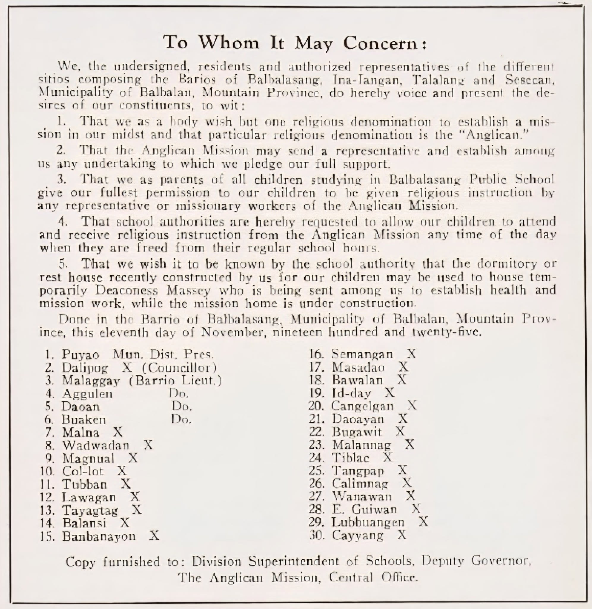

A Centennial Note on the St. Paul's Mission in Balbalasang: Puyao Leads Macedonian Appeal

I came across this highly significant detail while scouring the internet for historical documents in relation to the upcoming centennial of the Episcopal Church mission in Balbalaang and the paper I'm currently working on, "Indigeneity at the confluence of Ecumenical and Sectarian Christianities: The Case of a Philippine Ethnolinguistic Community".
My main contention in this academic essay is that today's ecumenically-inclined Liturgical churches are in a better position than fundamentalist Evangelical and Pentecostal churches to engage Indigenous communities on an equal footing and help sustain or enrich Indigenous Knowledge Systems and Practices.
* Mosher, Frank. 1926. "A Macedonian Cry which Cannot Be Ignored". Spirit of Missions, 91: 541-546